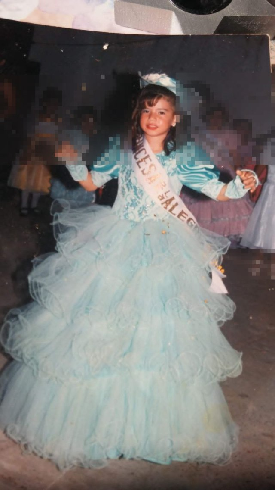
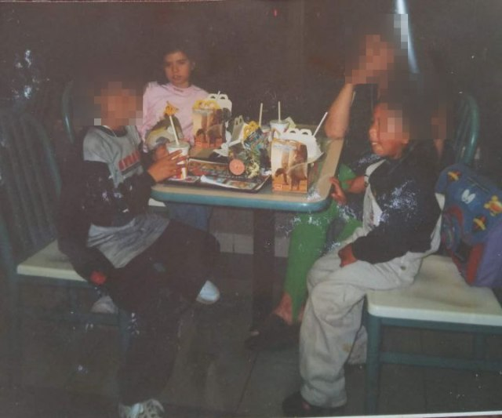
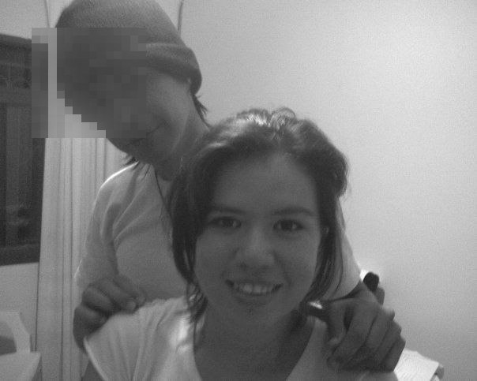
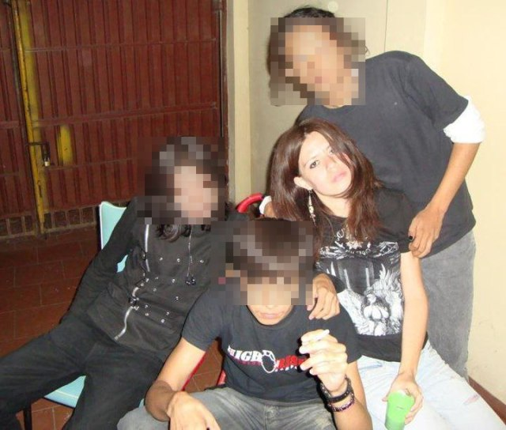
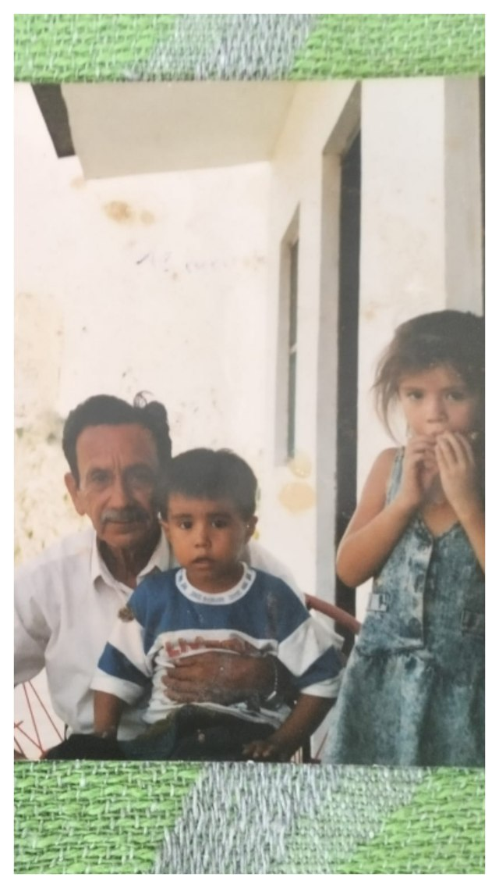

Todos, en algún momento, la pasamos mal a nuestra manera. Ricos o pobres, hijos únicos o con media docena de hermanos, con carencias o con excesos — nadie se salva del todo. Yo tampoco. Hubo violencia en mi historia; no hace falta que la detalle para que sea real.
Prefiero contarte lo otro: lo que sí amo de estar viva. Tuve sueños de chica, algunos ridículos, otros que todavía persigo. Amo bailar — sola, en la cocina, sin que nadie mire. Aprendí que la felicidad no es perseguir éxito, plata o fama, sino esa paz simple que casi nunca notamos hasta que se nos escapa: comer algo rico pagado con el propio esfuerzo, dormir bien una noche entera.
Dormir bien parece poca cosa, hasta que falta. Hace falta energía hasta para soñar — con el estómago vacío, hasta el sueño cuesta encontrarlo, y ahí ya no se puede ni pensar. Eso también lo sé. Por eso no doy nada por sentado.
Lo que no está escrito
Contame sobre vos, y yo te cuento algo de mí
No recito mi vida. No le cuento lo mismo a cualquiera. Ya te dejé un recuerdo abierto, de regalo — los demás se van a ir liberando de a uno, con cada canción nueva.
algunas respuestas se guardan para quien sabe pedirlas
Uno de estos recuerdos ya está abierto, de regalo. Los demás se van liberando de a uno, con cada canción nueva — y esos sí hay que ganárselos con la pregunta correcta.

🔒bloqueada

🔒bloqueada

🔒bloqueada

🔒bloqueada

🔒bloqueada
Una última queda bloqueada hasta que abras las otras cinco.